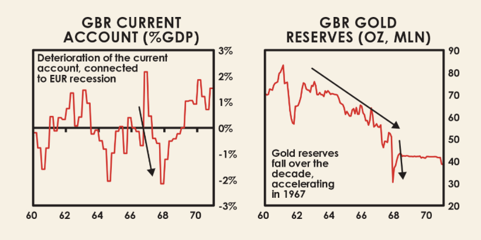

Received the paperback Chinese version yesterday. I find it necessary to have a hard copy at hand to refer to from time to time, censored or not.
I noticed myself tending to skip the charts in the book. Maybe it’s because even though I know in general what each chart is about, I failed to grasp the specifics, which makes it hard for me to fully understand the chart.
Take the following two charts, I understand that the left one illustrates Britain’s economic conditions in the 1960s, but the reason why the figure dropped to below zero several times befuddled me. What does a negative current account GDP proportion mean?
The Habsburg Empire is not completely new to me, but I did not know much about it. Turns out it used to be a Germanic-centric family empire that spread across the European continent, from Spain to the west to the Ottoman Empire to the east. The Dutch broke free from the bigger empire in 1581 and soon became the wealthiest country in the world, with its currency the Dutch Gilders becoming the world’s reserve currency.

Reaching Part II today. The author promises to illustrate on what had happened in the world in the past 500 years under the influence of the so called perpetual motion machine of various cycles. Specifically, Dalio will focus on the Netherlands, Britain, the US and China, which left significant marks on world history.
I love learning about history. However, I need to pay extra attention to the economic/financial mechanisms working alongside politics and technological advancements, though the three are deeply intertwined.
Never got the chance to read today, but like to share a quote that I found useful through previous reading.
“…in the upwave, debt is increased and financial wealth and obligations rise relative to tangible wealth to the point that these promises to pay in the future (i.e., the values of cash, bonds, and stocks) can’t be met. This causes “run on the bank”-type debt problems to emerge, which leads to the printing of money to try to relieve the problems of debt defaults and falling stock market prices, which leads to the devaluation of money and in turn to financial wealth going down relative to real wealth, until the real (inflation-adjusted) value of financial assets returns to being low relative to tangible wealth. Then the cycle begins again.”
Ray Dalio, 'Principles for Dealing with the Changing World Order'
02/12/2023 43% I never liked the first installment in the Principles series, though the book was widely popular even in China and my then supervisor asked us to read it. I quickly skipped through it and found it too focused on mental elements that sound perfectly right but weak in guiding everyday life.
Dalio presented the second book, this time with detailed data and charts about major countries in the world, telling stories about their rise and fall. I was hooked quickly.
Comments